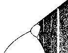
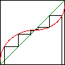
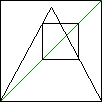
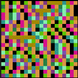

Deterministic chaos may sound like an oxymoron, but this is due to mistaking the popular and mathematical notions of "chaos." According to the descendants of Mr. Webster, chaos derives from the Greek word for abyss and means, "(a) a state of things in which chance is supreme; esp: the confused unorganized state of primordial matter before the creation of distinct forms (b) a state of utter confusion." That is, as a popular concept chaos is equivalent to randomneess. This is absolutely not the case for the mathematical notion of chaos. To emphaize the difference, we sometimes refer to this mathematical sense of chaos as deterministic chaos.
| A. The unbearable quickness of doubling: iteration of even the humble number 2 can reach from a grain of rice to the stars. Or: some history of the invention of chess. | |
| B. Slightly more complicated dynamics can lead to MUCH more complicated behavior. For such systems, small differences in the initial conditions can grow into large changes in later values. This is sensitivity to initial conditions, one of the attributes of chaos. | |
| C. The test functions for our study of chaos: the logistic map and the tent map. The logistic map is defined by a parabola, the tent map by a broken line, both symmetric about x = 1/2. For both, the height of the maximum point is varied to define a family of functions. The height gives the family parameter. | |
| D. Given a function f(x) and an initial point x0, the orbit of x0 is the sequence x1=f(x0), x2=f(x1), ... . Here are seven ways to visualize the long-term behavior of the orbit. These can be used to analyze any sequence of values, including experimental data. | |
| D.1. Graphical iteration produces the orbit
by generating the points |
|
| D.2. The time series is the plot of orbit values
in order. That is, it is the graph of the points |
|
| D.3. A histogram of the orbit is obtained first by
dividing the range |
|
| D.4. The bifurcation diagram is a record of the eventual orbit values (plotted vertically) for each of a sequence of parameter values (plotted horizontally). This gives a record of how the dynamics change as the parameter varies. |  |
| D.5. The return map is a plot of points
|
|
| D.6. For the driven IFS plot, the range
|
|
| D.7. For a Kelly plot, the range
|
|
| Some dynamical behaviors can be predicted. Here are two examples. | |
| E. Fixed points are points x* left unchanged by the dynamics: f(x*) = x* for sequences generated by iterating a function f(x). For graphical iteration, fixed points are seen as the intersections of y = f(x) and y = x. The time series of a fixed point is a horizontal line. Fixed points are stable or unstable according as nearby points approach or recede from the fixed point. |  |
| F. An N-cycle is a collection of points x1, x2, ..., xN, that occur sequentially, with xN followed by x1 and the pattern repeating. For sequences generated by iterating a function f(x), the cycle is determined by x2 = f(x1), x3 = f(x2), ..., x1 = f(xN). These cycles are intersections of y = x and y = fN(x) = f(f(...f(x)...)). Stability of a cycle is analogous to that of a fixed point. |  |
| G. As a system parameter is varied, dynamics can become more complicated through period-doubling bifurcations. At the parameter value where an N-cycle becomes unstable, a stable 2N-cycle appears: each point of the cycle gives rise to two points of the 2N-cycle. As the parameter value continues to increase, the 2N-cycle becomes unstable, and each point gives rise to two points of a stable 4N-cycle, and so on. | |
| H. What happens after all these period-doublings? This is the first appearance of chaos. In addition to sensitivity to initial conditions, chaos has two other attributes. It is filled with cycles, all of them unstable, and every region eventually visits every other region. | |
| I. What happens when the top of the graph of the function iterated is higher than the top of the unit square? Almost all points escape the unit square, but those that do not form a familiar fractal, a Cantor set. On this Cantor set, the dynamics are chaotic. | |
| J. All the various dynamics of the tent map and of the logistic map can be assembled into the Tent and Logistic Bifurcation Diagrams. Both exhibit chaos, but the tent diagram is much simpler: the logistic diagram contains infinitely many windows of stable cycles. | |
| K. The periodic windows in the logostic bifurcation diagram open through tangent bifurcations. As the parameter increases, the minima of fn(x) decrease until they touch y = x, forming points of a new cycle. With increasing parameter, the minima decrease, giving rise to a pair of points, one stable, one unstable. So tangent bifurcations give rise to a pair of cycles, one stable, the other unstable. | |
| L. Just before a periodic window opens, the orbit clusters into clumps around the cycle of the window. This is Intermittency. The time series appears to follow close to an n-cycle for some time, then takes an apparently random excursion, only to return to the n-cycle. Graphical iteration of fn(x) reveals the cause of this behavior. Intermittency is observed in many physical systems. | |
| M. Breaking the tent map into a discontinuous function and bending part of the graph gives a much more interesting bifurcation diagram. The right side of the diagram looks much like that of the tent map, but the left side exhibits a sequence of periodic windows interwoven in the same order as the discs attached around the cardioid of the Mandelbrot set. | |
| N. Investigations of the distances between successive period-doubling bifurcations led to the discovery of a new kind of scaling, and a new mathematical constant. Presaging the next section, this constant is universal in the sense that it arises in a large class of functions. | |
| O. Against the objections that the logistic map is a very special case, we offer the universality of the logistic map dynamics. A large collection of functions exhibit behavior qualitatively, and in some ways quantitatively, identical to that of the logistic map. Moreover, this is observed in many experiments. | |
| P. How can we understand this universality? The process called renormalization shows that higher iterates of the logistic map contain small copies of the whole map. Now what would this have to do with fractals? Some of the ideas of renormalization developed in statistical mechanics and have been applied in the study of phase transitions. For example, at high enough pressure as water vapor nears its condensation temperature, droplets of liquid water can coexist with the vapor. Droplets of many sizes form, and the mixture suddenly switches from transparent to milky. This is called critical opalescence. Pressures of over 200 atm and temperatures above 600 F are needed to observe this, so don't try it at home. | |
| Q. IFS driven by the Tent Map and the Logistic Map reveal a new measure of complexity. In some instances, the pattern is identical to that produced by a random IFS with certain pairs of transformations excluded. Others require longer excluded combinations (triples, quadruples, etc.) The number of excluded combinations is this measure of complexity. Applied to real data, this suggests how many steps in the past are needed to determine the future. | |
| R. Kelly plots of the Tent Map and the Logistic Map produce some interesting patterns, but is it art? Intermittency if clearly seen by this method (as in the picture on the right), and excluded combinations can be detected, though with more work than driven IFS. On the other hand, some long-range correlations can be more readily seen. Also, this method has more flexibility in the number of bins assigned to the data. Driven IFS and Kelly plots complement one another nicely. |  |
| S. Loss of predictability is the bad news of chaos; the good news is a much more robust strategy for control of chaotic systems. With occasional, slight modifications of the system parameter, we can stabilize any one of the unstable periodic orbits permeating chaos. For applications, it is important to note this method can be applied WITHOUT having a mathematical model of the underlying dynamical process. Experiments with magnetic systems, chemical reactions, and even cardiac arrhythmias, validate this approach. | |
| T. With some degree of feedback, periodic systems such as pendula, and even some species of fireflies, can synchronize. Surprisingly,chaotic processes can synchronize as well. This method has applications in secure communication. |